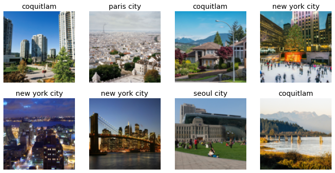
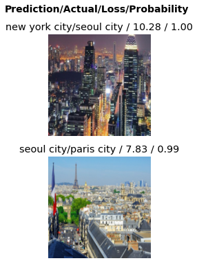
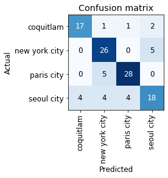
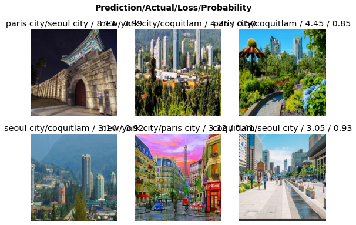

City Detector 🏙️
Coquitlam Paris Seoul and New York.
Let’s make app that recognizes Coquitlam!
Let’s get the images of each city
(#596) [Path('cities/coquitlam/00000000.jpg'),Path('cities/coquitlam/00000001.jpg'),Path('cities/coquitlam/00000002.png'),Path('cities/coquitlam/00000003.jpg'),Path('cities/coquitlam/00000004.jpg'),Path('cities/coquitlam/00000005.jpg'),Path('cities/coquitlam/00000006.jpg'),Path('cities/coquitlam/00000007.jpg'),Path('cities/coquitlam/00000008.jpg'),Path('cities/coquitlam/00000009.jpg')...](#16) [Path('cities/coquitlam/00000067.jpg'),Path('cities/coquitlam/00000077.JPG'),Path('cities/coquitlam/00000079.jpg'),Path('cities/coquitlam/00000135.jpg'),Path('cities/new york city/00000010.jpg'),Path('cities/new york city/00000014.jpg'),Path('cities/new york city/00000020.jpg'),Path('cities/new york city/00000026.jpg'),Path('cities/new york city/00000029.jpg'),Path('cities/new york city/00000037.jpg')...](#16) [None,None,None,None,None,None,None,None,None,None...]Let’s load the data

Let’s scale and augment the datas
Let’s build and run a CNN model
| epoch | train_loss | valid_loss | error_rate | time |
|---|---|---|---|---|
| 0 | 2.187395 | 1.315027 | 0.482759 | 00:42 |
| epoch | train_loss | valid_loss | error_rate | time |
|---|---|---|---|---|
| 0 | 1.307873 | 0.871226 | 0.336207 | 00:41 |
| 1 | 1.064780 | 0.831430 | 0.241379 | 00:41 |
| 2 | 0.876646 | 0.767134 | 0.215517 | 00:41 |
| 3 | 0.784991 | 0.738216 | 0.224138 | 00:49 |
Let’s look at the confusion matrix

We got an accuracy of 26/90 = 71% (rounded)

Let’s try to clean up the dataset
| epoch | train_loss | valid_loss | error_rate | time |
|---|---|---|---|---|
| 0 | 1.933403 | 1.322945 | 0.460870 | 00:38 |
| epoch | train_loss | valid_loss | error_rate | time |
|---|---|---|---|---|
| 0 | 1.258363 | 0.800413 | 0.347826 | 00:37 |
| 1 | 1.014135 | 0.660854 | 0.243478 | 00:38 |
| 2 | 0.851025 | 0.609896 | 0.243478 | 00:38 |
| 3 | 0.725140 | 0.591347 | 0.217391 | 00:37 |
| 4 | 0.623130 | 0.582418 | 0.226087 | 00:37 |
Valid_loss doesn’t decrease so we stop


It looks like it has a hard time highlighting seoul city’s characteristics as most error comes from seoul images. Suspected factors include seoul having new york like buildings, mountains like coquitlam and brick structures like paris city.
Ignore Below (Deployment IPR)
(#1) [Path('export.pkl')]['coquitlam', 'new york city', 'paris city', 'seoul city']